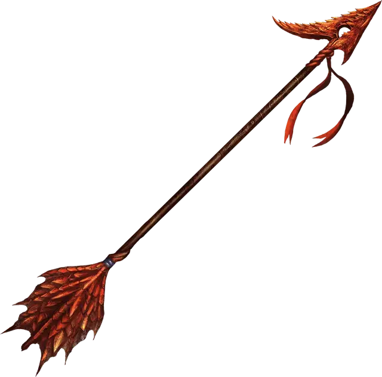

Стрела убийства
Arrow of Slaying
Оружие (стрела), очень редкое

Рекомендованная стоимость 2 501-25 000 зм
Стрела убийства это магическое оружие, предназначенное для убийства существ определённого вида. Область применения может быть как широкой, так и более конкретной; например, существуют и стрелы убийства драконов и стрелы убийства синих драконов. Если существо, принадлежащее к виду, расе или группе, связанной со стрелой убийства, получает от неё урон, оно должно совершить спасбросок Телосложения Сл 17, получая дополнительный колющий урон 6к10 при провале или половину этого урона при успехе.
После того как стрела убийства причиняет существу дополнительный урон, она становится немагической стрелой.
Есть и другие разновидности боеприпасов с такой же магией, такие как арбалетные болты убийства, хотя стрелы встречаются чаще всего.